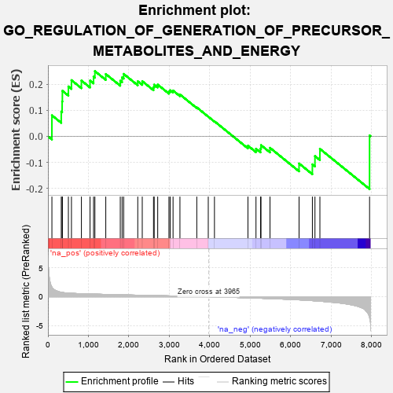
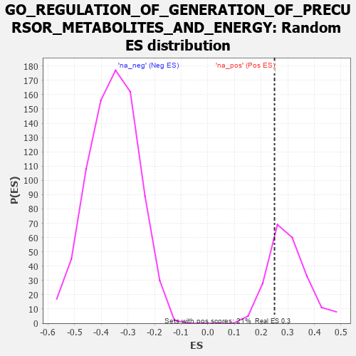

| | | Dataset | 7d |
| Phenotype | NoPhenotypeAvailable |
| Upregulated in class | na_pos |
| GeneSet | GO_REGULATION_OF_GENERATION_OF_PRECURSOR_METABOLITES_AND_ENERGY |
| Enrichment Score (ES) | 0.25041717 |
| Normalized Enrichment Score (NES) | 0.8371689 |
| Nominal p-value | 0.72897196 |
| FDR q-value | 0.89054555 |
| FWER p-Value | 1.0 |
Table: GSEA Results Summary

Fig 1: Enrichment plot: GO_REGULATION_OF_GENERATION_OF_PRECURSOR_METABOLITES_AND_ENERGY
Profile of the Running ES Score & Positions of GeneSet Members on the Rank Ordered List
| PROBE | GENE SYMBOL | GENE_TITLE | RANK IN GENE LIST | RANK METRIC SCORE | RUNNING ES | CORE ENRICHMENT | | 1 | IRS1 | | | 98 | 1.659 | 0.0806 | Yes |
| 2 | NUP85 | | | 329 | 0.772 | 0.0949 | Yes |
| 3 | GSK3A | | | 351 | 0.745 | 0.1340 | Yes |
| 4 | ARNT | | | 357 | 0.741 | 0.1749 | Yes |
| 5 | NUP54 | | | 505 | 0.627 | 0.1915 | Yes |
| 6 | CCNB1 | | | 581 | 0.601 | 0.2158 | Yes |
| 7 | RAE1 | | | 827 | 0.524 | 0.2143 | Yes |
| 8 | AKT1 | | | 1040 | 0.476 | 0.2142 | Yes |
| 9 | NUP93 | | | 1127 | 0.459 | 0.2291 | Yes |
| 10 | NUP43 | | | 1160 | 0.453 | 0.2504 | Yes |
| 11 | NUP88 | | | 1429 | 0.404 | 0.2393 | No |
| 12 | NUP58 | | | 1787 | 0.340 | 0.2133 | No |
| 13 | NOA1 | | | 1832 | 0.332 | 0.2264 | No |
| 14 | NUP62 | | | 1871 | 0.324 | 0.2397 | No |
| 15 | TRAP1 | | | 2219 | 0.274 | 0.2113 | No |
| 16 | SEC13 | | | 2330 | 0.256 | 0.2118 | No |
| 17 | PDE12 | | | 2608 | 0.211 | 0.1887 | No |
| 18 | NUP50 | | | 2625 | 0.209 | 0.1984 | No |
| 19 | PHB2 | | | 2712 | 0.197 | 0.1986 | No |
| 20 | ISCU | | | 2989 | 0.151 | 0.1723 | No |
| 21 | COX17 | | | 3019 | 0.147 | 0.1769 | No |
| 22 | TIGAR | | | 3091 | 0.138 | 0.1757 | No |
| 23 | NUP98 | | | 3261 | 0.112 | 0.1607 | No |
| 24 | ABCD1 | | | 3677 | 0.047 | 0.1110 | No |
| 25 | NCOR1 | | | 3961 | 0.000 | 0.0754 | No |
| 26 | MTOR | | | 4114 | -0.025 | 0.0576 | No |
| 27 | EP300 | | | 4941 | -0.186 | -0.0361 | No |
| 28 | FLCN | | | 5140 | -0.235 | -0.0478 | No |
| 29 | IDE | | | 5252 | -0.258 | -0.0474 | No |
| 30 | CDK1 | | | 5264 | -0.262 | -0.0341 | No |
| 31 | ACTN3 | | | 5486 | -0.315 | -0.0443 | No |
| 32 | INSR | | | 6204 | -0.538 | -0.1045 | No |
| 33 | DYRK2 | | | 6533 | -0.677 | -0.1078 | No |
| 34 | TPR | | | 6597 | -0.709 | -0.0761 | No |
| 35 | GSK3B | | | 6719 | -0.768 | -0.0483 | No |
| 36 | PASK | | | 7946 | -3.674 | 0.0032 | No |
Table: GSEA details [plain text format]

Fig 2: GO_REGULATION_OF_GENERATION_OF_PRECURSOR_METABOLITES_AND_ENERGY: Random ES distribution
Gene set null distribution of ES for GO_REGULATION_OF_GENERATION_OF_PRECURSOR_METABOLITES_AND_ENERGY